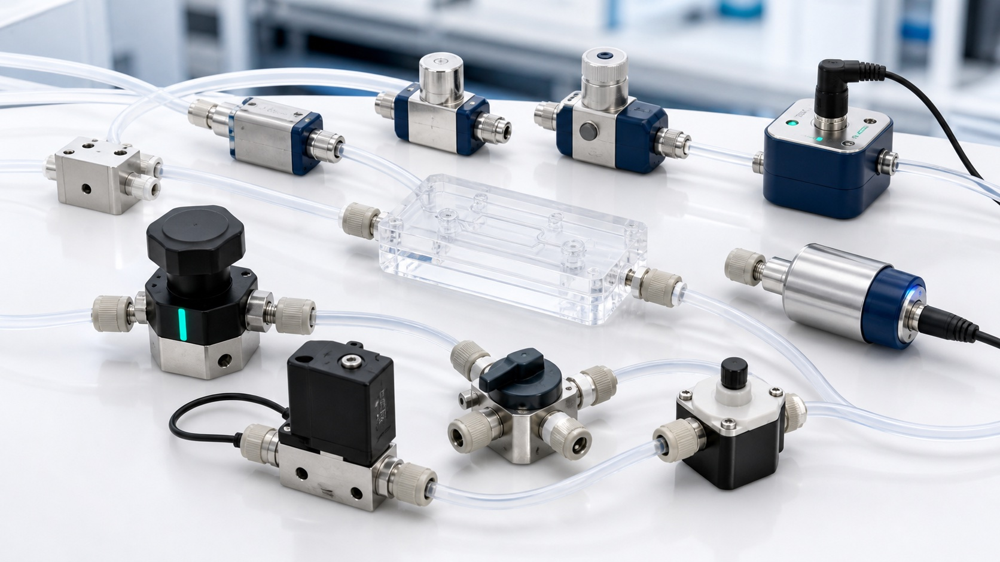

Flow and pressure range
Define minimum controllable flow, maximum pressure, stability, and transient response.

Pumps and flow control
Compare syringe pumps, peristaltic pumps, pressure controllers, valves, flow sensors, and pressure sensors for research microfluidic systems.

Selection answer
Use a syringe pump for direct programmed displacement, a pressure controller for responsive low-pulsation flow, and a peristaltic pump when tubing-only wetted paths or recirculation matter. Final selection depends on flow range, pressure, fluid properties, pulsation tolerance, feedback needs, and channel resistance.
Technical content reviewed by MicroCD Labs · Updated July 28, 2026. Confirm final selection against the written quote, applicable source documentation, and the complete research system.
Before requesting a quote
MicroCD Labs reviews compatibility, documentation, final pricing, availability, and lead time before payment.
Define minimum controllable flow, maximum pressure, stability, and transient response.
Compare displacement, pressure-driven, and tubing-compression approaches for the experiment.
Determine whether flow, pressure, valve state, software control, or closed-loop sensing is required.
Research-use catalog
Open an item for variants, specifications, source and production-route review, documentation, and quote status.
Pumps
Source and production route confirmed by quote.
Single- and multi-channel syringe pump options for controlled microfluidic flow in R&D setups.
Pumps
Source and production route confirmed by quote.
Peristaltic pump options for continuous transfer, recirculation, perfusion, and tubing-based flow.
Controllers
Source and production route confirmed by quote.
Pressure-driven flow control options for stable microfluidic operation and fast response.

Valves
Source and production route confirmed by quote.
Miniature valves for automated switching, reagent routing, and instrument control.
Valves
Source and production route confirmed by quote.
Pinch valves for contactless fluid control through flexible tubing.
Sensors and meters
Source and production route confirmed by quote.
Inline sensors for monitoring low-flow performance and checking experimental stability.
Sensors and meters
Source and production route confirmed by quote.
Pressure sensing options for pumps, manifolds, cartridges, and controlled test systems.
Sensors and meters
Source and production route confirmed by quote.
Flow meters for calibration, verification, and routine checks in microfluidic systems.
Technical review
Share the fluid, target flow or pressure, interface sizes, and intended research workflow. We can help build a compatible shortlist.